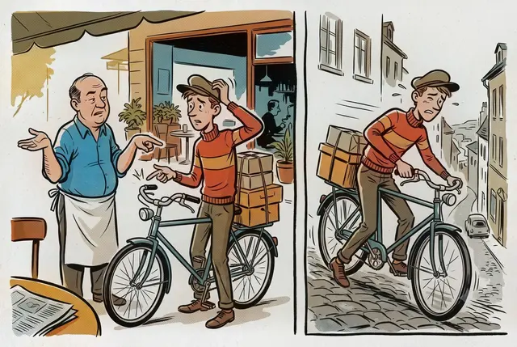
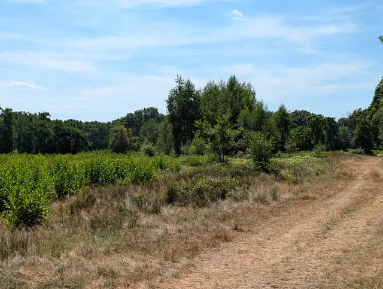

Software Developer & Home Automation Enthusiast
I’m Amthonie, a PHP developer living in Naarden. I work in travel technology, and in my spare time I enjoy experimenting with thoughtful home automation and spending time in nature. In both life and tech, I try to keep things local, private and sustainable, picking up new skills as I go. Over time I’ve learned to build things that provide real value1, having lost enough hours on features that looked appealing but helped no one. More about me
1. I know this page breaks my own rule; the ongoing tinkering is simply too enjoyable.
nihil invitus facit sapiens
necessitatem effugit,
quia vult quod coactura est.The wise person never acts against his will; he eludes necessity by willing what would otherwise be imposed.
Jottings
All jottingsBuzzers, Bach, and 8-Bit Nostalgia
Transcribing Bach for a piezo buzzer, forty years on.

The Unlimited Colleague
On the subtle social benefit of letting a software tool endure a relentless stream of minor questions.

Brake Lessons on the Terrace
A masterclass in fleet maintenance and single-lever stop logistics overheard over coffee.

A Midsummer Walk with Beginners’ Mistakes
A quiet stroll past an abandoned swimming pool, a few scruffy birds, and the inescapable return of local pollen.

Satire · Fiction
The Interplanetary Chronicle
Because reality isn’t ridiculous enough: a satirical outlet reporting boldly, inaccurately and with great enthusiasm on the state of the cosmos. Proudly the worst tabloid in this galaxy and beyond.
Read the ChronicleMelodies for ESPHome
MelodiesRTTTL tunes from my ESPHome setup — everything from structured beeping to cheerful 8‑bit intrusions — presented with an in‑browser player and a short guide for anyone curious enough to compose their own.
Worth a Click
A small collection of people, causes and places that matter to me.

450 km sponsor walk for rare blood disorders
Support my friend’s 450 km charity walk through Swedish Lapland — an extraordinary effort she’s undertaking to help people living with rare blood disorders. Every contribution goes directly to research and support.

Stichting Zeldzame Bloedziekten (SZB)
Because rare conditions affect fewer people, they are often overlooked and underfunded. Join us in supporting those living with rare blood disorders, raising awareness and promoting research.

Goois Natuurreservaat
They maintain and protect the landscapes of ’t Gooi, the region around Naarden — keeping the woodlands, fields and drifting sands I love to walk through in good shape.

Visit Naarden
Explore the cobblestone streets of Naarden, one of Europe’s best‑preserved star‑shaped fortified towns. Learn about its rich history at the Dutch Fortress Museum, take a boat trip on the moat, or discover the nearby Naardermeer nature reserve. Afterwards, enjoy a cosy café within the ramparts or in neighbouring Bussum.

Home Assistant
Open‑source home automation with local autonomy and privacy at its core. Built and maintained by a worldwide community of tinkerers and DIY enthusiasts. I’ve been a happy user for over five years — it helps me manage my smart devices and gives me a clear picture of what’s going on at home.

NextPax Travel Technology
NextPax helps holiday homes, hotels and flats appear on booking sites worldwide. Instead of updating each site by hand, everything stays in sync automatically — giving them more bookings with far less manual work. My employer since 2017.